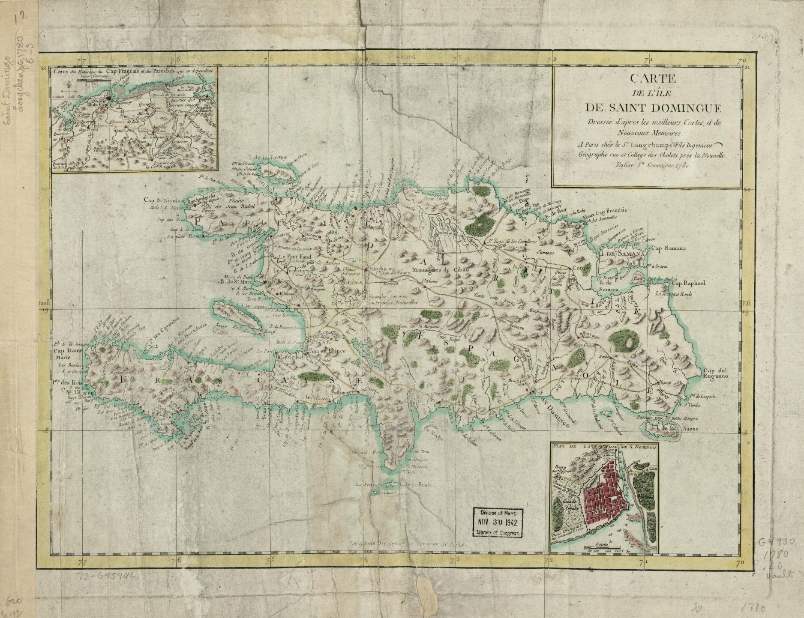
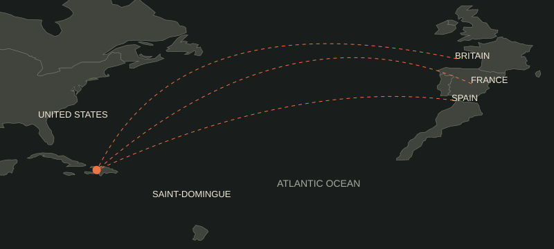
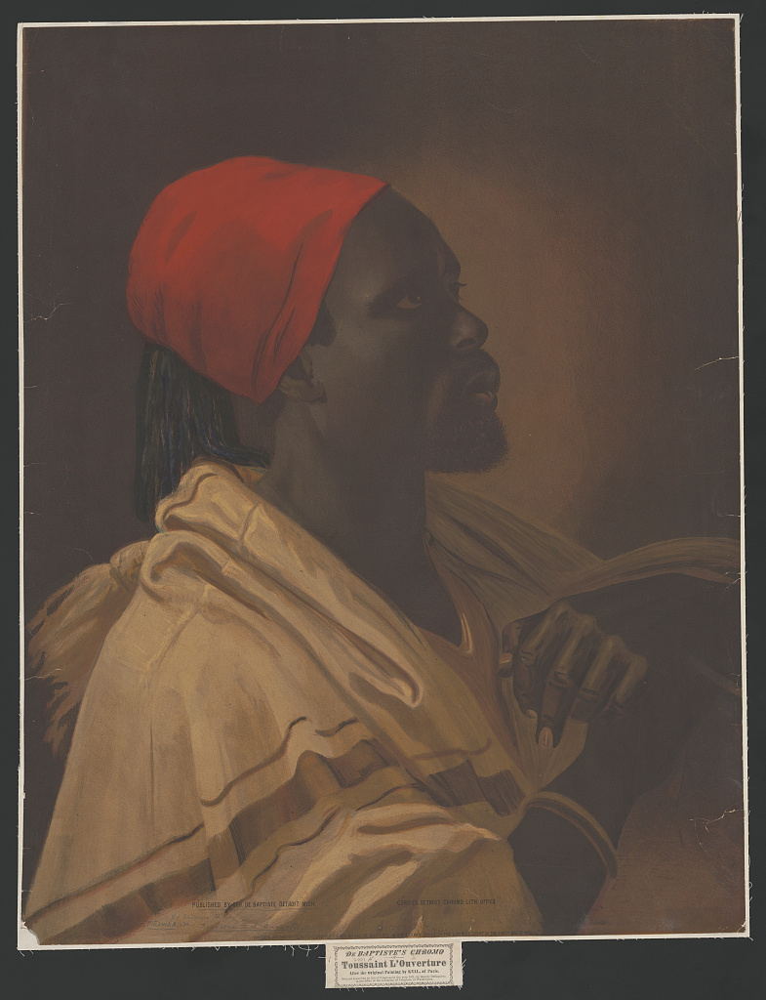
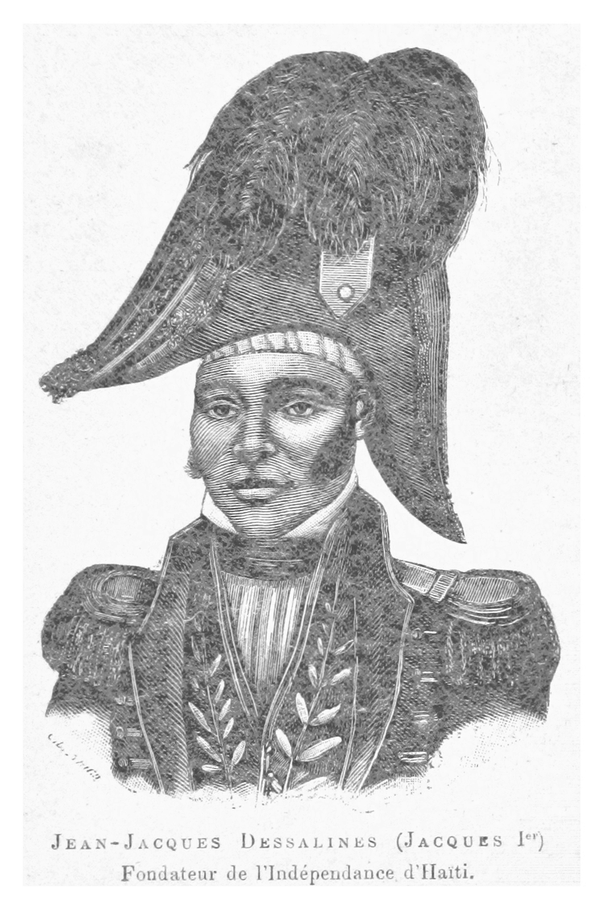
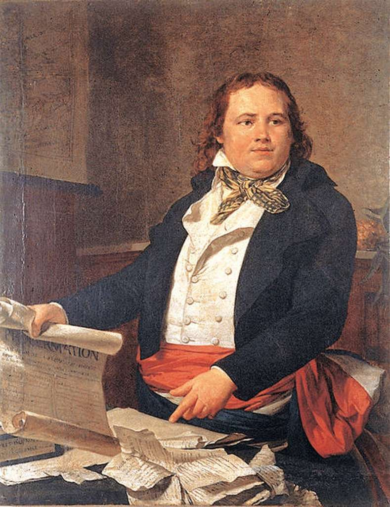
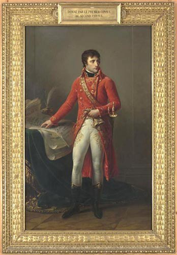

Wealthy white planters & merchants
Grands blancs
They held economic power through plantations and trade. Their conflicts with French officials did not make them allies of emancipation.
A DIGITAL HISTORY EXHIBITION
SAINT-DOMINGUE → HAITI
Freedom
at a Price
The people who overturned slavery.
The independence the world made
them pay for.
1791 REVOLT
1804 INDEPENDENCE
1825 INDEMNITY
AN EXHIBITION BY JESSIE XIE SCROLL TO EXPLORE ↓
THE QUESTION THAT GUIDES THIS EXHIBITION
To a profound, but not total, extent. The revolution made emancipation and Black sovereignty central to Haiti’s identity. The international response—especially France’s indemnity—restricted the resources available to turn independence into lasting economic security. That history shaped Haiti’s choices without determining every later outcome.
01 / THE ORIGINS
France’s profitable sugar and coffee colony occupied the western part of Hispaniola. Its wealth depended on enslaved labor. Race, class, and legal status shaped who could claim rights—and who paid for prosperity. (Class timeline) (Office of the Historian)
EXPLORE / COMPETING INTERESTS
What they wantedGreater political and economic autonomy from France while protecting plantation wealth and slavery.
Where conflict emergedTheir demand for liberty could mean less control from France while keeping enslaved workers under their own control.
These categories describe broad social positions, not identical beliefs held by every person. Based on the project organizer and (Class timeline).
Enslavement denied the majority control of their lives. Free people of color faced discrimination despite their legal freedom. Less wealthy whites could defend racial privilege even while challenging wealthy planters.
The Enlightenment and France’s 1789 revolution supplied a language of liberty and equality. Colonial factions fought over its meaning. The exclusion of enslaved people exposed the contradiction in proclaiming rights while preserving bondage.
Sugar and coffee exports enriched owners through forced labor. Preserving plantation profits conflicted with workers’ demands for freedom and control of land. Colonial wealth was never the same thing as shared prosperity.
WHY THESE CAUSES COMBINED
White colonists’ disputes with France weakened agreement over who should govern. Free people of color challenged the idea that citizenship belonged only to whites. The enslaved majority challenged the labor system that both groups could profit from. These conflicts overlapped, but their goals were not interchangeable: winning a vote did not free an enslaved worker, and replacing French officials did not end slavery.
The French Revolution helped open a political crisis. Enslaved people used that opening, along with their own networks and resistance, to demand changes that French officials and many free colonists had not intended. That explains why the conflict became more radical than a dispute over colonial representation. (Class timeline) (Eddins 277–81)
No. African political and spiritual traditions, maroon communities, and networks across plantations also sustained resistance. Eddins emphasizes the initiative of enslaved people and fugitives. Bois Caïman symbolizes that collective organization, although the ceremony’s precise date, location, and reported words remain debated. The revolution cannot be explained as France giving liberty to passive recipients. (Eddins 277–81)
Cotard and Dubois begin their illustrated history with the Middle Passage and the participation of enslaved women and men. That perspective connects the uprising to people’s own experiences of enslavement and collective resistance, rather than only to decisions made in Paris. (Cotard and Dubois)
02 / THE REVOLUTION UNFOLDS
A multi-sided conflict, with shifting alliances. Follow the turning points, then explore the places where revolutionary change became real.
TURNING POINT / 01
1789
As France’s revolution challenged Louis XVI’s monarchy, debates over rights spread to Saint-Domingue. Lafayette proposed a declaration of rights; the National Assembly adopted the Declaration of the Rights of Man and of the Citizen on 26 August 1789. Colonial groups disagreed over who should benefit.
Why it matters Universal rights became an argument against racial exclusion, but did not immediately end slavery.
(Class timeline) (Library of Congress, “Declaration Legacy”)TURNING POINT / 02
August 1791
A coordinated uprising attacked the plantation system in northern Saint-Domingue. Enslaved people turned long-standing resistance into a large military and political challenge.
Why it matters Freedom would be fought for by enslaved people themselves. The struggle could no longer be confined to disputes among free colonists.
(Class timeline) (Eddins 277–81)TURNING POINT / 03
4 April 1792
France granted equal political rights to free men of color. Commissioners, including Sonthonax and Polverel, came to enforce the new policy.
Why it matters This attacked racial exclusion among free men, while leaving the enslaved majority outside citizenship. One revolutionary goal did not resolve the others.
(Class timeline)TURNING POINT / 04
29 August 1793
Sonthonax proclaimed general emancipation in the north as French authority faced internal conflict and foreign invasion. Polverel extended emancipation in other regions.
Why it matters Insurgent pressure and the need for military allies helped turn a French mission to restore order into a break with slavery.
(Shen, “Upheavals”)TURNING POINT / 05
4 February 1794
The National Convention abolished slavery in France’s colonies. Saint-Domingue’s deputies brought the colonial struggle into French politics; Dufay spoke in the debate and Danton supported abolition. In May, Louverture left his Spanish alliance and joined the French republican forces.
Why it matters The relationship worked in both directions: revolutionary ideas influenced Saint-Domingue, and the colonial uprising transformed French policy.
(Class timeline) (Shen, “Upheavals”) (Assemblée nationale)TURNING POINT / 06
July 1801
Louverture’s constitution maintained abolition and claimed broad autonomy while keeping a formal connection to France. He became governor for life; compulsory plantation labor continued.
Why it matters This was not a declaration of independence. Abolition, political authority, and workers’ freedom to control labor remained contested.
(Class timeline) (Shen, “Louverture”)TURNING POINT / 07
1802
Napoleon sent Leclerc’s expedition to restore French control. Louverture was arrested and deported in June. Slavery’s restoration in Guadeloupe and attempts to disarm Black troops deepened fears of re-enslavement.
Why it matters Dessalines and other commanders briefly served the French before rejoining resistance. Independence increasingly became a way to secure emancipation.
(Class timeline)TURNING POINT / 08
18 November 1803
Revolutionary forces defeated the French at Vertières, helping force the evacuation of the remaining French expedition.
Why it matters Haitian military organization and resistance were decisive. Yellow fever and, later, Britain’s naval pressure also weakened the French expedition.
(Embassy of Haiti) (Class timeline)TURNING POINT / 09
1 January 1804
Dessalines proclaimed independence and the name Haiti replaced Saint-Domingue. The victorious revolution ended French colonial rule in the west of Hispaniola.
Why it matters A society built on racial slavery became an independent Black state. The victory made self-emancipation a challenge to the wider Atlantic slave system.
(Class timeline) (Embassy of Haiti)AFTERMATH / RECOGNITION & DEBT
17 April 1825
Charles X issued an ordinance demanding 150 million francs for former colonists. A French naval mission later that year pressured Boyer into accepting the terms.
Why it matters This was an aftermath of independence, not an event in the 1791–1804 war. Recognition was used to extract wealth from an already independent country.
(Gaillard-Pourchet)EXPLORE / THE GEOGRAPHY
Saint-Domingue was the French west; Santo Domingo was the Spanish east in 1791. Spain ceded the east to France in 1795. Louverture extended his authority there in 1801. Modern coastlines and the modern border below are orientation aids, not a map of political control at every date. (Class timeline)
North is up. Generalized coastline and modern border: Natural Earth, public domain. Markers are approximate; Cap-Français and Vertières are very close.

Look for “Partie Françoise” in the west and “Partie Espagnole” in the east. The upper-left inset shows the area around Cap-Français, near the northern plain where the 1791 uprising began. This is a map from the colonial period, not a reconstruction of the war.
Because it predates 1791, it does not show the uprising, shifting military control, or later independence. The clickable map above remains useful for locating the exhibit’s events. Select this image to inspect the full-size scan.

France sought to retain the colony; Spain backed insurgents against France; Britain invaded and sought colonial advantage. Louverture used rivalries strategically. The United States traded with Saint-Domingue, alternated between assistance and hostility, and withheld diplomatic recognition of Haiti until 1862. Lack of recognition did not mean that all trade stopped. (Office of the Historian)
Locator map with modern national outlines; dashed lines show connections, not exact military routes. Natural Earth geometry.
As France’s revolution challenged Louis XVI’s monarchy, debates over rights spread to Saint-Domingue. Lafayette proposed a declaration of rights; the National Assembly adopted the Declaration of the Rights of Man and of the Citizen on 26 August 1789. Colonial groups disagreed over who should benefit. Significance: Universal rights became an argument against racial exclusion, but did not immediately end slavery. (Class timeline) (Library of Congress, “Declaration Legacy”)
A coordinated uprising attacked the plantation system in northern Saint-Domingue. Enslaved people turned long-standing resistance into a large military and political challenge. Significance: Freedom would be fought for by enslaved people themselves. The struggle could no longer be confined to disputes among free colonists. (Class timeline) (Eddins 277–81)
France granted equal political rights to free men of color. Commissioners, including Sonthonax and Polverel, came to enforce the new policy. Significance: This attacked racial exclusion among free men, while leaving the enslaved majority outside citizenship. One revolutionary goal did not resolve the others. (Class timeline)
Sonthonax proclaimed general emancipation in the north as French authority faced internal conflict and foreign invasion. Polverel extended emancipation in other regions. Significance: Insurgent pressure and the need for military allies helped turn a French mission to restore order into a break with slavery. (Shen, “Upheavals”)
The National Convention abolished slavery in France’s colonies. Saint-Domingue’s deputies brought the colonial struggle into French politics; Dufay spoke in the debate and Danton supported abolition. In May, Louverture left his Spanish alliance and joined the French republican forces. Significance: The relationship worked in both directions: revolutionary ideas influenced Saint-Domingue, and the colonial uprising transformed French policy. (Class timeline) (Shen, “Upheavals”) (Assemblée nationale)
Louverture’s constitution maintained abolition and claimed broad autonomy while keeping a formal connection to France. He became governor for life; compulsory plantation labor continued. Significance: This was not a declaration of independence. Abolition, political authority, and workers’ freedom to control labor remained contested. (Class timeline) (Shen, “Louverture”)
Napoleon sent Leclerc’s expedition to restore French control. Louverture was arrested and deported in June. Slavery’s restoration in Guadeloupe and attempts to disarm Black troops deepened fears of re-enslavement. Significance: Dessalines and other commanders briefly served the French before rejoining resistance. Independence increasingly became a way to secure emancipation. (Class timeline)
Revolutionary forces defeated the French at Vertières, helping force the evacuation of the remaining French expedition. Significance: Haitian military organization and resistance were decisive. Yellow fever and, later, Britain’s naval pressure also weakened the French expedition. (Embassy of Haiti) (Class timeline)
Dessalines proclaimed independence and the name Haiti replaced Saint-Domingue. The victorious revolution ended French colonial rule in the west of Hispaniola. Significance: A society built on racial slavery became an independent Black state. The victory made self-emancipation a challenge to the wider Atlantic slave system. (Class timeline) (Embassy of Haiti)
Charles X issued an ordinance demanding 150 million francs for former colonists. A French naval mission later that year pressured Boyer into accepting the terms. Significance: This was an aftermath of independence, not an event in the 1791–1804 war. Recognition was used to extract wealth from an already independent country. (Gaillard-Pourchet)
03 / THE PEOPLE
These four figures influenced the revolution in different ways. Sonthonax and Napoleon represented French authority; Louverture and Dessalines emerged from the struggle against slavery. The portraits are historical artworks, with dates and sources below each image.

Defending emancipation / 1790s–1802
Born enslaved and free before the uprising, Louverture became a leading commander. He first fought alongside Spain, then joined the French Republic in 1794. He consolidated power and issued the 1801 constitution. Arrested and deported in 1802, he died in French captivity in 1803.
He defended abolition while imposing plantation labor and concentrating political power. His career shows why legal emancipation did not settle who controlled work or government.
(Class timeline) (Shen, “Louverture”) (Shen, “Upheavals”)
Winning independence / 1802–1804
Formerly enslaved, Dessalines became one of Louverture’s generals. After briefly serving under Leclerc in 1802, he joined the final coalition against France, led the independence struggle, and proclaimed Haiti independent in 1804.
His victory secured freedom from France, but he became emperor later in 1804 and ordered massacres of remaining French residents. Independence did not automatically produce inclusive democracy or end state violence.
(Class timeline) (Office of the Historian)
A French commissioner / 1792–1797
Sent to enforce political equality for free people of color, Sonthonax proclaimed emancipation in the north on 29 August 1793. Revolt, civil conflict, and foreign intervention helped push French officials toward abolition.
He sought to preserve French republican control. He was an important agent of emancipation, but was not a leader of Haitian independence; insurgents helped force the change he enacted.
(Shen, “Upheavals”)
Restoring colonial authority / 1802–1803 expedition
As France’s First Consul, Napoleon sent the expedition commanded by his brother-in-law Charles Leclerc in 1802. French efforts to disarm troops, remove Black commanders, and restore colonial authority threatened the revolution’s gains.
The law of 20 May 1802 maintained slavery where it had not been abolished; it did not itself restore slavery in Saint-Domingue. Its restoration elsewhere made fears of re-enslavement credible.
(Class timeline)Beyond the generals: insurgent networks and women’s participation helped sustain the revolution. Boukman, Biassou, and Jean-François helped lead early resistance; no single leader created the movement. (Eddins 277–81)
04 / HISTORICAL INTERPRETATION
These were overlapping conflicts with changing goals—not three neatly separated revolutions. Each breakthrough exposed the limits of the previous one.
POLITICAL EQUALITY / FREE PEOPLE OF COLOR
Equal political rights challenged white monopoly on citizenship. The 1792 reform still excluded enslaved people. Some advocates of racial equality among free people remained slaveholders.
1792 reform
≠
universal freedom
EMANCIPATION / ENSLAVED INSURGENTS
The 1791 uprising overlapped with the citizenship struggle. Emancipation in 1793 and French abolition in 1794 attacked slavery itself. Yet compulsory plantation labor kept the meaning of freedom in dispute.
1794 abolition
≠
control of labor
INDEPENDENCE / AN ANTI-COLONIAL COALITION
Louverture’s 1801 constitution tried to protect abolition within a French connection. The 1802 expedition showed how vulnerable that arrangement was. Expelling France became a means of preventing re-enslavement.
1804 sovereignty
≠
economic security
The alliances changed because each group was trying to protect a different version of freedom. Louverture could support France when the Republic defended abolition; Dessalines could later fight France when colonial rule threatened it. The enslaved uprising began in 1791, before free men of color won equal political rights in 1792. That overlap matters: emancipation was already being fought for while citizenship was still being debated. Independence grew out of these conflicts rather than following a plan everyone had shared from the beginning. (Class timeline) (Shen, “Upheavals”)
CLOSE READING / A PRIMARY SOURCE
Article 3 states, “There cannot exist slaves on this territory.” Yet this was not a declaration of independence or a promise that workers could freely leave plantations. Read the provisions together. (Constitution of 1801, arts. 1, 3, 16, 28)
The constitution preserved a French connection while making abolition permanent in law. Louverture was trying to secure freedom without formally breaking with France.
The text treated cultivators’ movement between plantations as a danger to production and allowed the governor to enforce labor rules. For workers, freedom also meant control over where and how they worked.
Louverture received life tenure. The constitution rejected racial slavery while placing political authority in one leader’s hands. Abolition and democracy were separate questions.
Why this matters: This document supports the “three revolutions” interpretation with evidence. Racial equality, emancipation, and national independence did not arrive together. Even leaders who defended abolition disagreed with workers over the practical meaning of freedom.
English translation, articles 1, 3, 16, and 28. A constitution records legal aims; it cannot by itself show how consistently those aims were enforced.
05 / THE AFTERMATH
Haiti won independence in 1804. France made recognition conditional on payment in 1825. Former colonists were to receive compensation; the people who had been enslaved received a bill.
Historical indemnity totals, not annual installments or present-day dollars. The revision replaced the original total; it was not an additional 90 million. Interest and borrowing costs are separate. (Gaillard-Pourchet)
Charles X’s ordinance of 17 April 1825 demanded payment to former colonists. Under naval pressure, President Boyer accepted that summer. Earlier Haitian leaders had discussed compensation as a route to recognition, but the military threat and imposed terms made bargaining profoundly unequal.
Plantation valuations incorporated enslaved labor. The arrangement assigned financial value to slaveholders’ losses while denying compensation to those who had endured slavery. (Gaillard-Pourchet)
Haiti owed the indemnity and borrowed to pay it. The first 30-million-franc loan delivered only 24 million after charges, so Haiti had to supply the difference. Interest created obligations beyond the indemnity itself.
The burden transferred resources out of Haiti and reduced what the state could use at home. Political independence did not remove outside control over the conditions of economic survival. (Gaillard-Pourchet)
FOLLOW THE MONEY / EVIDENCE AND INTERPRETATION
Gaillard-Pourchet finds that external debt service consumed about half of state revenue in 1838–44. That figure concerns external debt as a whole, not only the original indemnity. It shows the scale of the competing claim on public funds. (Gaillard-Pourchet)
Revenue used for repayment could not also pay for public services. When payment required another loan, the immediate problem could become a longer obligation. The effect was more than a one-time loss: borrowing costs and the loss of investment could continue after the original transfer. This helps explain the connection to public investment without assuming that we can calculate exactly which present-day problems each franc caused.
Recognition could offer greater security and a path to normal diplomatic relations. A leader facing French naval pressure could see payment as the least dangerous option. But a practical reason for accepting an agreement does not make its terms fair. Haiti was being charged to secure recognition of the independence it had already won. (Gaillard-Pourchet)
The answer depends on which obligation is being counted. Gaillard-Pourchet dates settlement of the indemnity to 1878 through refinancing, and the end of payments on the 1875 loan to 1921–22. UN News uses 1947 for the broader debt legacy. These dates should not be collapsed into a claim that Haiti paid the original indemnity directly to France until 1947. (Gaillard-Pourchet) (UN News, 2025)
THE CONTROVERSY / EVALUATE THE CLAIM
Recognition was tied to an extraction backed by force. Restitution would address a specific transfer, rather than treating Haiti’s financial constraints as a failure of its people. A claim for compensation for the wider damage would also consider the opportunities lost when public resources left the country.
Returning documented payments, adjusting their present value, and compensating for lost growth are different calculations. A settlement must identify beneficiaries, funding, and Haitian control of its use. Disagreement over the amount or delivery does not by itself erase the original injustice.
In the April 2025 UN report, journalist Monique Clesca describes the reversal: those who won freedom had to compensate former enslavers. Martin Kimani calls for returning extracted funds and addressing underdevelopment; Gaynel Curry proposes a reparations fund and an independent Human Rights Council inquiry. (UN News, 2025)
These proposals address different needs. Restitution concerns money taken; a fund concerns how repair could support people today; an inquiry would investigate responsibility and possible remedies. A credible response would need to explain both what France owes and how Haitians would decide what happens next.
France should return the wealth extracted through the indemnity and negotiate further repair with Haitians. The strongest reason is the specific injustice: a military threat helped force a country founded by formerly enslaved people to compensate former colonists. The amount and form of a settlement still need careful agreement. Haitian participation and independent oversight would matter because acknowledgment alone does not restore resources or guarantee public benefit.
This evaluation draws on the historical evidence above; current calls for restitution are reported in (UN News, 2025).
06 / THE LEGACY
Was the revolution successful? Against slavery and French colonial rule, decisively. Measured by economic security or democratic government, its victory left unfinished struggles.
MODERN CONNECTION / PUBLIC INVESTMENT & FINANCIAL SOVEREIGNTY
Recognition tied to an indemnity.
Borrowing and repayment compete with domestic priorities.
Less room to build infrastructure and institutions.
The legacy becomes a question of resources and responsibility.
The connection is that past extraction reduced the resources available to build a stronger state. It does not prove that the indemnity caused every school, road, or service missing today. Later political decisions, foreign interventions, disasters, and violence also shaped Haiti’s development. This history explains an important constraint, not an inevitable outcome. (Gaillard-Pourchet) (Office of the Historian)
CONTEMPORARY EVIDENCE / 19 APRIL 2025
The 19 April 2025 UN News report cites roughly $560 million as the modern equivalent of payments and more than $20 billion in estimated lost growth, drawing on a 2022 investigation. The second figure models how the economy might have grown if the money had stayed in Haiti. It is not an amount Haiti literally paid. (UN News, 2025)
A 17 April 2025 AP report states that Macron announced a joint Haitian–French historical commission on 17 April 2025, but did not directly address demands for reparations. This distinction matters: recognizing an injustice does not establish what will be returned or how it will improve people’s lives. (Nouvian and Corbet)
Read the dated news report ↗Kimani welcomed the commission but tied its value to honestly acknowledging the harm. The modern issue is therefore concrete: whether investigation will lead to resources that Haitians can use for their own priorities, rather than another symbolic statement. (UN News, 2025)
IDENTITY / THE MEANING OF THE VICTORY
The revolution created the first independent Black republic and the only successful enslaved uprising to found an independent nation. Independence challenged the idea that racial slavery was a natural or permanent foundation for wealth and government.
Its legacy reaches beyond economic hardship. Commemorations of independence and Vertières preserve a history of collective action and sovereignty. Treating Haiti only as a symbol of failure repeats the erasure of what its people achieved. (Embassy of Haiti) (Class timeline)
ASSESSING THE OUTCOME
The revolution succeeded. The 1804 declaration secured independence, and the attempt to restore slavery in Saint-Domingue failed. Later poverty does not undo that achievement.
The outcome was more limited. Louverture’s life tenure, plantation labor restrictions, and Dessalines’s later imperial rule show that independence did not settle who should hold power or how it should be used.
Haiti became sovereign but still faced powerful foreign demands. The indemnity shows how France could extract wealth even after losing the colony. Military victory did not remove every form of colonial influence.
Judging the revolution only by present-day hardship makes its success depend on whether later generations escaped every obstacle. A fairer assessment asks what it changed, what it left unresolved, and which later pressures were imposed on the country. (Class timeline) (Constitution of 1801, arts. 1, 3, 16, 28) (Gaillard-Pourchet)
RETURN TO THE ESSENTIAL QUESTION
The Haitian Revolution shaped Haiti’s identity to a very great extent: freedom from slavery and the right of Black people to govern themselves became the foundation of the nation. It also shaped later challenges because other powers treated that independence as something Haiti had to pay to have recognized. The indemnity reduced the resources available for development, but it cannot explain every later crisis. The most convincing conclusion is that Haiti won real political freedom while facing severe limits on its economic choices. The revolution’s success and the country’s later struggles are both part of that history.
It expanded political rights for free men of color but did not abolish slavery. The 1791 uprising was already demanding deeper change. This overlap is exactly why the revolution cannot be reduced to three isolated stages.
THE RESEARCH / WORKS CITED
The exhibit uses thirteen historical and research sources, plus five portrait and map records. The class timeline and The Nib come from the assignment’s resource list. Image credits identify the artwork’s date and whether it was created after the subject’s death.
Cotard, Rocky, and Laurent Dubois. “The Slave Revolution That Gave Birth to Haiti.” The Nib, 5 Feb. 2018. https://thenib.com/haitian-revolution/. Accessed 9 Nov. 2026.
Assignment resource: Haitian Revolution as a Story. Opening panels used for the role of enslaved women and men and the memory of the Middle Passage.
“Haitian Revolution Timeline of Key Events.” Class handout, n.d. https://docs.google.com/document/d/1-qgujwQYE0ES1N5gBBBm4tvCsfyOcVnBw9hXyIJRvUc/edit. Accessed 9 Nov. 2026.
Assignment resource: Timeline of Haitian Revolution. Used for the sequence of events and the 1801 labor requirement; precise dates cross-checked.
“How Haiti Paid for Its Freedom – Twice Over.” UN News, United Nations, 19 Apr. 2025. https://caribbean.un.org/en/293392-how-haiti-paid-its-freedom-%E2%80%93-twice-over. Accessed 9 Nov. 2026.
Linked in the assignment document. Modern news connection; this UN Caribbean page republishes the UN News report.
Eddins, Crystal Nicole. “Voices of Liberty: The Haitian Revolution Begins.” Rituals, Runaways, and the Haitian Revolution: Collective Action in the African Diaspora, Cambridge UP, 2022, pp. 277–300. https://doi.org/10.1017/9781009256148.012. Accessed 9 Nov. 2026.
Scholarly research: open-access scholarly chapter. Used for African political traditions, maroon networks, and the uncertainty around Bois Caïman.
Gaillard-Pourchet, Gusti-Klara. “La dette de l’indépendance d’Haïti. L’esclave comme unité de compte (1794–1922).” Patrimoines partagés: France-Amériques, Bibliothèque nationale de France, Nov. 2023. https://heritage.bnf.fr/france-ameriques/dette-lindependance-dhaiti-lesclave-comme-unite-compte-1794-1922. Accessed 9 Nov. 2026.
Additional research: historian’s essay linked to archival documents. Used for loan terms, repayment chronology, and the reduction in 1838.
Office of the Historian. “The United States and the Haitian Revolution, 1791–1804.” Milestones in the History of U.S. Foreign Relations, U.S. Department of State, n.d. https://history.state.gov/milestones/1784-1800/haitian-rev. Accessed 9 Nov. 2026.
Additional research: U.S. diplomatic history. Used for foreign involvement and delayed U.S. recognition. The historical series is now retired.
Shen, Kona. “Upheavals in France and Saint-Domingue: 1793–1796.” The Haitian Revolution Timeline, n.d. https://thehaitianrevolution.com/upheavals. Accessed 9 Nov. 2026.
Additional research: timeline originally developed at Brown University, now independent. Used to check Sonthonax’s proclamation and Louverture’s change of alliance.
Shen, Kona. “Toussaint Louverture in Power: 1796–1801.” The Haitian Revolution Timeline, n.d. https://thehaitianrevolution.com/toussaint-louverture. Accessed 9 Nov. 2026.
Additional research: used for Louverture’s consolidation of power and tensions over plantation labor.
Embassy of Haiti. “Key Dates.” Embassy of Haiti in Washington, D.C., n.d. https://www.haiti.org/key-dates/. Accessed 9 Nov. 2026.
Additional research: used for the Battle of Vertières and Haiti’s national commemorations.
Saint-Domingue, Central Assembly. Constitution of 1801. 1801. English translation, Toussaint Louverture High School, n.d. https://toussaintlouverturehs.org/PDF/const.pdf. Accessed 9 Nov. 2026.
Primary source: articles 1 and 3 preserve a French connection while abolishing slavery; articles 16 and 28 show restrictions on workers and life tenure for Louverture.
Assemblée nationale. “Dufay et Danton (4 février 1794).” Assemblée nationale, n.d. https://www2.assemblee-nationale.fr/decouvrir-l-assemblee/histoire/grands-discours-parlementaires/dufay-et-danton-4-fevrier-1794. Accessed 9 Nov. 2026.
Institutional edition of the 1794 debate, including speeches by Dufay and Danton. Used to explain how colonial events influenced French abolition.
Library of Congress. “Declaration Legacy.” Creating the United States, n.d. https://www.loc.gov/exhibits/creating-the-united-states/declaration-legacy.html. Accessed 9 Nov. 2026.
Exhibition with Lafayette’s draft. Used for the Declaration of the Rights of Man and of the Citizen and its adoption on 26 August 1789.
Nouvian, Tom, and Sylvie Corbet. “France’s President Says That Making Haiti Pay for Its Independence Was Unjust.” AP News, 17 Apr. 2025. https://apnews.com/article/france-haiti-debt-independence-injustice-339df651093e932d42d607fd3f08025f. Accessed 9 Nov. 2026.
Contemporary reporting on the indemnity debate. Used for the April 2025 historical commission and the distinction between acknowledgment and a commitment to pay.
DeBaptiste, George, publisher. Toussaint L’Ouverture. Circa 1870. Chromolithograph. Library of Congress. https://www.loc.gov/pictures/item/2014645197/. Accessed 9 Nov. 2026.
Portrait credit: Corrie’s Detroit Lithographic Office. No known restrictions on publication. Produced after Louverture’s death; it is not a verified life portrait.
“Jean-Jaques Dessalines (Fondateur de l’Independance d’Haiti).” Dictionnaire géographique et administratif universel d’Haïti illustré, by S. Rouzier, 1892, p. 115. British Library, via Wikimedia Commons. https://commons.wikimedia.org/wiki/File:Jean-Jaques_Dessalines_(Fondateur_de_l'Independance_d'Haiti).jpg. Accessed 9 Nov. 2026.
Portrait credit: public-domain book illustration. British Library scan; digitization can affect contrast. Published long after Dessalines’s death.
Unidentified artist. Portrait of Léger-Félicité Sonthonax. Late eighteenth century. Oil painting. Wikimedia Commons. https://commons.wikimedia.org/wiki/File:Sonthonax.jpg. Accessed 9 Nov. 2026.
Portrait credit: public-domain reproduction of an eighteenth-century painting; artist unidentified. The file record does not identify its present collection.
Gros, Antoine-Jean. Bonaparte Premier Consul. 1802. Oil on canvas, Musée national de la Légion d’honneur et des ordres de chevalerie, Paris. Fondation Napoléon. https://www.napoleon.org/histoire-des-2-empires/iconographie/bonaparte-premier-consul/. Accessed 9 Nov. 2026.
Portrait credit: historical painting by Gros, reproduced by Fondation Napoléon. It presents Napoleon as First Consul, the office he held when sending the expedition.
Des Longchamps, Jacques François. Carte de l’île de Saint Domingue. Paris, 1780. Library of Congress. https://www.loc.gov/item/73695996/. Accessed 9 Nov. 2026.
Archival map of Hispaniola, including an inset of Cap-Français. Predates the revolution; it cannot show the progress of the war. Public-domain historical map.
The constitution is a primary source for legal goals and the distribution of power; it is not proof of daily practice. The archival map shows colonial geography in 1780, not troop movements during the revolution. Later portraits help us study how leaders were remembered, but should not be treated as photographs or certain likenesses.
The 2025 news reports document a dated debate about restitution. The dollar estimates measure different things, and the repayment dates depend on which debt is counted. Interpretations of success and the case for restitution are arguments based on the evidence, not claims that every historian agrees.
.jpg){kind=link}